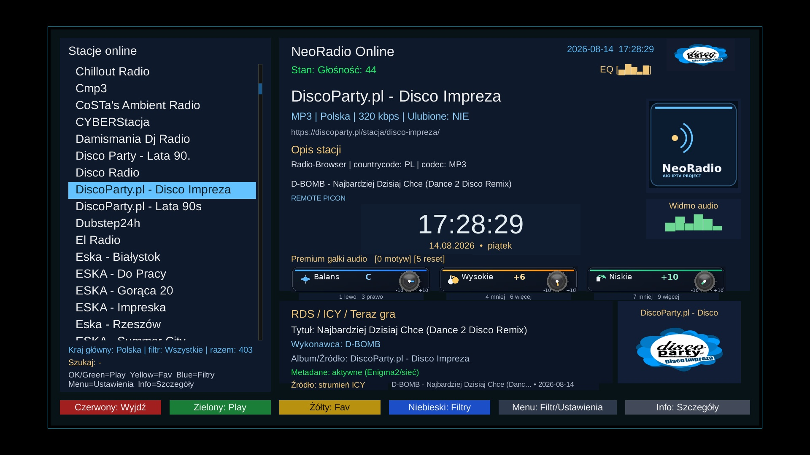

Witam na mojej stronie Paweł Pawełek
Internet Radio for Enigma2 • duża aktualizacja
NeoRadio 3.0.0
Gruntownie przebudowana wersja NeoRadio po pełnym audycie kodu. Wydanie 3.0.0 rozwija obsługę Radio-Browser, stacji użytkownika, RDS/ICY, grafik i piconów, aktualizacji, danych lokalnych oraz interfejsu AIO — z naciskiem na stabilność i możliwie lekkie działanie także na słabszych tunerach.

Najważniejsze informacje
Wersja: 3.0.0
Pakiet: enigma2-plugin-extensions-neoradio_3.0.0_all.ipk
Rozmiar: 10.37 MB
Wydanie: 14.08.2026
Autor: Paweł Pawełek / AIO Team
SHA-256: d9e43b84d64c061fe106aa9d2f5d5c3371a7eb34a4b6d4dc76c99ed1991a11ef
Co zmienia 3.0.0?
- pełny audyt i uporządkowanie kodu wtyczki
- optymalizacja Radio-Browser i pracy z dużą bazą stacji
- bezpieczniejsza aktualizacja z walidacją pakietu i SHA-256
- cache grafik, limity pobierania oraz obsługa PNG/JPEG
- bezpieczniejszy, atomowy zapis ulubionych, historii i cache
- nowa szata graficzna spójna z rodziną AIO
- poprawiony ekran informacji, kod QR i obsługa przycisku INFO
- automatyczne sprzątanie własnych plików instalacyjnych z
/tmp
🔍 Pełny audyt kodu
NeoRadio zostało przeanalizowane od podstaw pod kątem stabilności, zgodności i dalszego rozwoju. Audyt objął strukturę wtyczki, źródła stacji, Radio-Browser API, stacje użytkownika, ulubione i historię, cache, pobieranie grafik, aktualizator, zapis JSON, zgodność Python 2 / Python 3, ActionMap, ekrany HD/FHD, zasoby graficzne oraz strukturę pakietu IPK.
Usunięto również stary i nieużywany kod pozostały po wcześniejszych wersjach oraz hotfixach.
📻 Poprawiona obsługa stacji
Wersja 3.0.0 łączy kilka źródeł stacji zamiast traktować je jako wzajemnie wykluczające się. NeoRadio może korzystać jednocześnie z wbudowanej bazy, własnych stacji użytkownika oraz danych pobranych z Radio-Browser.
- łączenie i deduplikacja źródeł
- poprawione zachowanie
stationuuidiurl_resolved - lepsze zachowanie nazwy stacji i kraju
- poprawiona obsługa favicon / logo
- lepsza obsługa bitrate i codec
🌍 Radio-Browser — duża optymalizacja
Ograniczono niepotrzebne pobieranie bardzo dużych zbiorów stacji, które na tunerach Enigma2 mogło zwiększać zużycie RAM i obciążać GUI.
- ograniczona liczba pobieranych rekordów
- mniejsze obciążenie pamięci
- poprawione sortowanie i filtrowanie
- bezpieczniejsza obsługa mirrorów Radio-Browser
- lepsza obsługa błędów sieciowych
- część operacji sieciowych wykonywana poza głównym wątkiem GUI
🖼️ Grafiki i picony stacji
- cache grafik
- limit rozmiaru pobieranych plików
- obsługa PNG i JPEG
- bezpieczniejsze pobieranie
- konwersja obrazów tam, gdzie dostępne jest Pillow
- ograniczenie zbędnych operacji sieciowych
💾 Bezpieczniejszy zapis danych
Ulubione, historia, cache i pliki JSON są zapisywane w sposób bardziej odporny na przerwanie pracy tunera. Atomowy zapis zmniejsza ryzyko uszkodzenia danych po restarcie GUI lub zaniku zasilania.
🔐 Bezpieczniejsza aktualizacja
Mechanizm aktualizacji nie opiera się już na dawnym schemacie wget --no-check-certificate. Wydanie 3.0.0 wykorzystuje HTTPS oraz dodatkową walidację pobieranej paczki.
- kontrola rozmiaru pobieranego pliku
- obsługa SHA-256
- kontrola struktury IPK
- weryfikacja nazwy pakietu
- weryfikacja numeru wersji
- odrzucenie nieprawidłowej lub uszkodzonej paczki
🎨 Nowa szata graficzna AIO
NeoRadio zostało wizualnie zbliżone do AIO Panel, IPTV Dream oraz pozostałych projektów AIO. Wspólna stylistyka wykorzystuje ciemny granat, jasny błękit i złote akcenty, a ekrany zostały uporządkowane pod kątem czytelności.
ℹ️ Informacje o projekcie i QR
Ekran informacji kieruje bezpośrednio na oficjalną stronę AIO. Dostęp działa z przycisku INFO oraz przez Menu → Informacje → Strona projektu.
- nazwa NeoRadio i numer wersji
- informacja o autorze
- adres strony projektu
- kod QR do szybkiego otwarcia strony
🎮 Poprawiona obsługa INFO
Różne image Enigma2 mapują klawisz INFO na różne akcje. NeoRadio 3.0.0 obsługuje kilka wariantów ActionMap, m.in. info, InfoPressed, IPressed oraz showEventInfo, aby zwiększyć zgodność z OpenATV, OpenPLi i pochodnymi.
🧹 Automatyczne czyszczenie /tmp
Po instalacji NeoRadio sprząta własne pliki instalacyjne z katalogu /tmp: pobrane IPK, pliki tymczasowe aktualizatora i pozostałości związane wyłącznie z NeoRadio. Mechanizm nie powinien usuwać plików innych wtyczek ani danych systemowych.
⚙️ Optymalizacja paczki i walidacja
Duża liczba elementów graficznych interfejsu została zoptymalizowana bez zmiany nazw i wymiarów, aby nie naruszać zgodności ze skinami. Przed przygotowaniem IPK sprawdzono m.in. składnię kodu, strukturę skinów HD/FHD, nazwy widgetów, integralność PNG, strukturę IPK, plik control, numer wersji, nazwę pakietu, mechanizm SHA-256, kod QR oraz zachowanie przy błędnej aktualizacji.
📥 Instalacja pobranego IPK
Pobierz pakiet z tej strony, wgraj go przez FTP do /tmp, a następnie wykonaj instalację. Po instalacji zrestartuj GUI Enigma2.
opkg install /tmp/enigma2-plugin-extensions-neoradio_3.0.0_all.ipkNeoRadio jest również dostępne z poziomu AIO Panel.
NeoRadio 3.0.0
To wydanie jest efektem pełnego audytu i przebudowy, a nie wyłącznie podniesienia numeru wersji. Najważniejszy kierunek rozwoju to stabilność, mniejsze obciążenie tunera, bezpieczniejsze operacje sieciowe i aktualizacje, lepsza organizacja kodu oraz wspólna stylistyka rodziny AIO.
NeoRadio 3.0.0 — Internet Radio for Enigma2